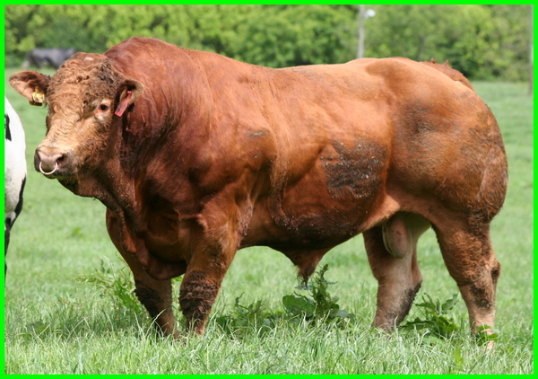

1. SAPI BRAHMAN
Sapi brahman merupakan sapi yang berasal dari India dan merupakan keturunan dari bos indiscuss atau yang juga dikenal sebagai sapi zebu. Berikut, merupakan sejumlah ciri khas dari sapi brahman.
- Memiliki punuk yang
- Memiliki kulit yang longgar
- Memiliki warna putih keabu-abuan dan sedikit kemerahan
- Terdapat gelambir di bagian bawah leher hingga perut lebar dengan banyak lipatan
- Bentuk telinga panjang menggantung
- Memiliki tanduk yang sangat kecil.
Jenis sapi brahma merupakan sapi potong yang paling baik untuk dikembangkan. Persentase karkasnya bahkan mencapai hingga 45 persen. Karkas ialah bagian tubuh sapi sehat yang sudah disembelih dengan cara yang halal, sudah dikuliti, dikeluarkan jeroan, dipisahkan antara badan dengan kepala, kaki, organ reproduksi, ambing (kelenjar susu), ekor, dan lemak yang berlebih.
Saat dalam proses ternak, sapi brahman cenderung tak pilih-pilih terhadap jenis pakan yang diberikan. Baik rumput hingga pakan tambahan apa pun dapat dikonsumsinya. Sapi ini juga lebih kebal terhadap gigitan nyamuk dan caplak serta lebih tahan panas.
Sapi brahman cocok untuk dikembangkan di daerah yang memiliki iklim tropis. Berat maksimum dari sapi brahman jantan hingga sekitar 800 kilogram, sedangkan dari sapi brahman betina hingga sekitar 500 kilogram.
2. SAPI SIMENTAL
Sapi simmental merupakan jenis sapi yang berasal dari daerah Simme, Swiss. Jenis sapi perah dan pedaging ini mempunyai bentuk tubuh yang kekar dan berotot. Warna bulu dari sapi simmental, yaitu cokelat kemerahan (merah bata), tetapi pada bagian muka, bawah lutut, dan ujung ekornya memiliki warna putih.
Berat dari sapi simental jantan dewasa dapat mencapai hingga 1150 kilogram, sedangkan berat dari sapi betina dewasa dapat mencapai hingga 800 kilogram.
Jenis sapi simmental cocok dipelihara di tempat yang memiliki iklim sedang. Persentase karkasnya cenderung tinggi serta memiliki kandungan lemak yang sedikit.
3. SAPI LIMOUSIN

Sapi limosin termasuk ke dalam salah satu jenis sapi yang juga diternakkan di Indonesia. Sapi ini pertama kali dikembangbiakan di Perancis. Jenis sapi limosin mempunyai ciri-ciri sebagai berikut.
- Otot yang lebih besar dari sapi simmental.
- Warna bulu cokelat tua, kecuali pada daerah ambing yang warnanya putih, dan bawah lutut serta sekitar mata yang memiliki warna lebih muda
- Memiliki bentuk tubuh yang besar, panjang, dan padat.
Karena memiliki ukuran dan berat yang lebih besar, jumlah daging yang dihasilkan dari sapi limosin pun menjadi lebih banyak. Proses pertumbuhan dari badan sapi potong jenis ini juga lebih cepat, lho!
Selain itu, kualitas daging dari jenis sapi limosin dinilai lebih lezat dan bagus untuk diolah menjadi makanan. Faktor inilah yang menyebabkan nilai jual dari sapi limosin jauh lebih mahal.
4. PERANAKAN ONGOLE
.jpg)
Sapi peranakan ongole (PO) merupakan persilangan antara sapi jantan Sumba ongole dengan sapi Jawa asli betina yang berwarna putih. Namun, kini telah banyak disilangkan dengan sapi brahman sehingga disebut sebagai sapi lokal berwarna putih atau keabu-abuan.
Sapi pedaging dan sapi pekerja ini memiliki leher yang panjang dan bergelambir, serta punuk yang ikut membesar apabila bobot tubuhnya bertambah. Bobot sapi peranakan ongole jantan dewasa bisa mencapai 800 kilogram, sedangkan betinanya mencapai 600 kilogram.
Bentuk muka sapi ini agak cembung, moncongnya rata berwarna hitam, dan memiliki tanduk berwarna gelap. Jenis sapi kurban ini mempunyai kemampuan adaptasi yang baik terhadap perbedaan kondisi lingkungan.
5. SAPI BALI
.jpg)
Sapi bali adalah salah satu ternak asli Indonesia. Jenis sapi pekerja ini memiliki tenaga dan daya tahan yang tinggi. Saat lahir, anak sapi bali berwarna sawo matang merah mengkilap dengan garis hitam di punggung yang terlihat jelas.
Setelah dewasa, sapi betina tetap berwarna sawo matang kemerahan, tetapi sapi jantannya berwarna hitam. Sapi bali memiliki bulu berwarna putih di belakang paha atau bokong, serta kaki bagian bawah. Tubuh sapi ini padat, tanduknya tumbuh melebar, dan kakinya pendek menyerupai kaki kerbau.
Persentase sapi bali cenderung tinggi dan kualitas dagingnya baik. Sapi ini mampu mencapai bobot sekitar 217 kilogram.
6.SAPI MADURA
.jpg)
Sapi madura adalah jenis sapi ternak potong lokal yang berasal dari Indonesia. Sapi ini juga banyak dimanfaatkan untuk membajak sawah. Sapi madura mempunyao kualitas daging karkas yang sangat baik serta rendah lemak. Berikut, merupakan karakteristik khas dari sapi madura.
- Memiliki bentuk tubuh kecil
- Memiliki bentuk kaki pendek dan kuat
- Bulunya berwarna merah bata
- Memiliki bentuk paha belakang yang berwarna putih
- Memiliki bentuk kaki depan berwarna merah muda
- Memiliki bentuk tanduk pendek
- Memiliki panjang badan yang menyerupai sapi bali
- Memiliki punuk dengan ukuran kecil.
Berat sapi madura jantan dewasa bisa mencapai hingga 500 kilogram, sedangkan sapi betina mencapai hingga 300 kilogram.
7.SAPI ACEH
.jpg)
Sapi aceh merupakan jenis sapi yang dihasilkan antara persilangan bos sondaicus dengan sapi zebu. Jenis sapi aceh pada umumnya memiliki warna merah bata, dan memiliki punuk dan bergelambir. Sapi aceh juga mudah untuk diternakan, mempunyai daya tahan tubuh yang kuat, sekaligus tahan dari berbagai penyakit, virus, dan parasit endemik. Bobot sapi Aceh jantan dewasa bisa mencapai sekitar 250-300 kilogram.
8. SAPI ANGUS
.jpg)
Sapi angus juga termasuk ke dalam salah satu dari berbagai jenis sapi yang diternakkan di Indonesia. Sapi angus berasal dari Skotlandia dan Inggris. Sapi ini mempunyai kualitas daging unggulan karena memiliki kandungan serat yang padat dan rendah lemak.
Sapi angus memiliki warna hitam serta tak mempunyai punuk dan tanduk. Bobot sapi jantan dewasanya dapat mencapai hingga 900 kilogram, sedangkan untuk sapi betina berkisar 600-700 kilogram.
9. SAPI TEANG

Septic tank wadah kedap air yang ditimbun. Biasanya terbuat dari beton, fiberglass, atau polietilen. Fungsinya untuk menahan air limbah dalam waktu yang cukup lama agar mengendap di dasar dan membentuk lumpur. Merujuk United States Environmental Protection Agency, limbah yang dibuang ke septic tank akan mengapung menjadi buih. Saluran pembuangan septic tank mencegah lumpur dan buih keluar dari tangki. Septic tank dibuat menggunakan teknik drainfield, penggalian dangkal yang tertutup. Itu dibuat di tanah Air limbah atau kotoran yang dibuang akan dialirkan melalui pipa ke permukaan yang ada porinya. Air limbah bisa disaring melalui tanah.
Tanah mengolah, kemudian menyebarkan air limbah, dan akhirnya dibuang. Jika saluran drainase septic tank penuh dengan cairan, bisa berakibat banjir. Itu yang menyebabkan limbah keluar ke permukaan tanah atau mengakibatkan penumpukan di toilet. Air limbah yang meresap ke dalam tanah secara alami melalui septic tank mengurangi bakteri coliform dan virus. Bakteri coliform sebagian besar bersumber dari usus manusia atau hewan berdarah panas lainnya. Bakteri ini digunakan sebagai indikator adanya kontaminasi kotoran manusia.